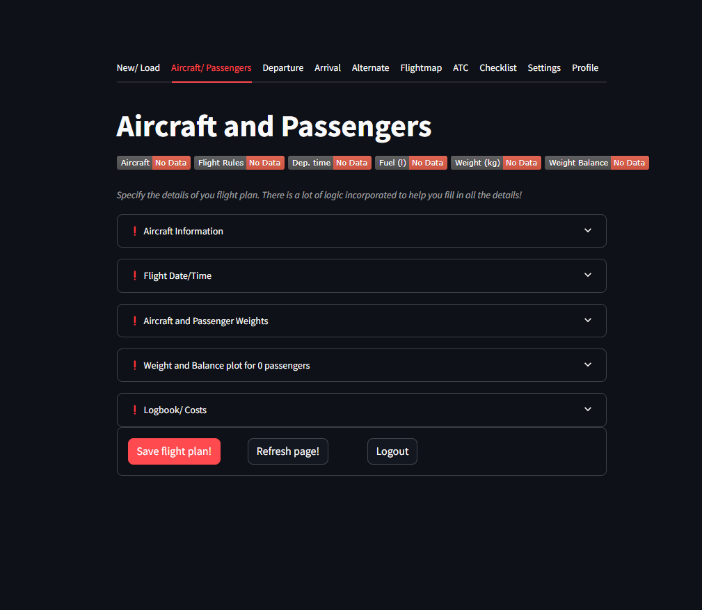
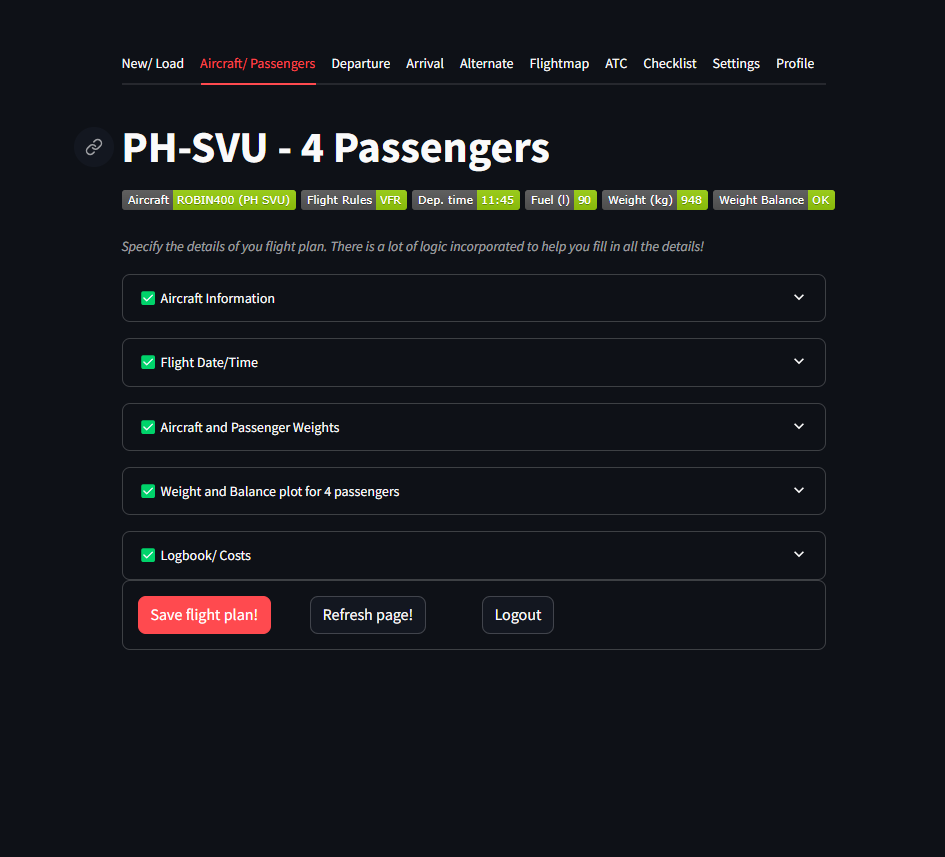
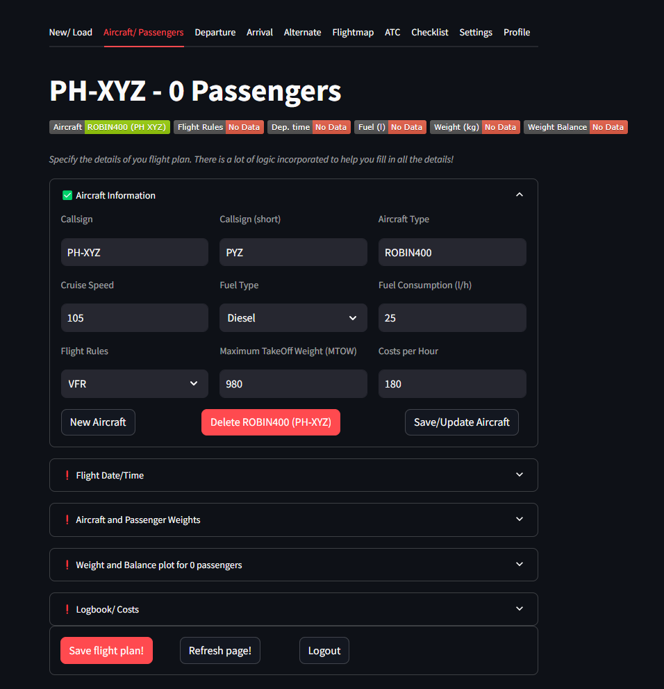
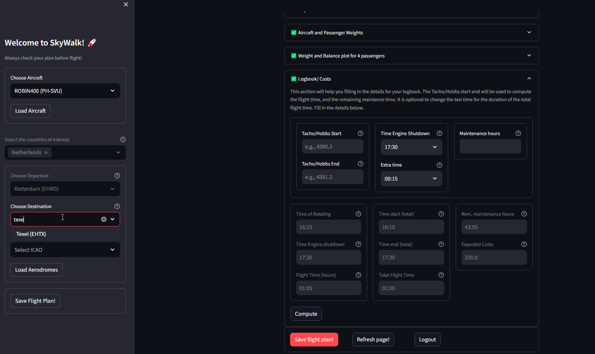

Aircraft/ Passengers
The Aircraft/ Passenger tab consists out of 5 expanders. All expanders are related to the aircraft and passengers information. At the top are shown badges that show a summary of the processed information.
When opening the expander, a messagebox will be shown in case information is missing. If all information is provided, the expander will get the ✅ Green check. Missing information is shown by the❗Exclamation mark. When expanders have green checkboxes, the weight and balance plot can be created thats indicate whether your weight distribution falls within the aircrafts envelope.
 |
 |
Aircraft Information
The aircraft type and other relevant properties can be set in the aircraft information expander.
As an example, set the properties Callsign, Aircraft type, Fuel Type etc.
The buttons at the bottoms allows you to create, delete or save/ update an aircraft.
 |
Flight Date/Time
The flight datetime expander is where you can set the date and time of departure. The departure location together with the date and time will provide information whether a VFR flight can be made. When the arrival location is provided, it will also show whether your time of arrival is before sunset, given the cruise speed that is provided.
|

Aircraft/ Passenger Weights
The weight distribution of fuel and passengers is crucial for the flight performance. In previous parts we readily specified the type of fuel (Diesel or JetA1) for the aircraft which has a different densities. The weight conversion to kg is as follows:
Note
JetA1: 0.78
Diesel: 0.82
Weight and Balance Envelope
In this example, the weight and balance scheme is previously set in the Settings tab. This includes the Arm and the x,y coordinates for the aircraft envelope.
See Settings tab for more details. In this part we can see how the weight distribution affects the performance of the aircraft.
|

Logbook/ Costs
The last expander is the logbook and costs that is associated for the flight plan.
When the Arrival location is set (left side panel), a time of arrival is computed and will be used in as the Time of Engine Shutdown. You can change this manually.
The Tacho/Hobbs values will be used to compute the time of rotation, and total flight time. In addition, the remaining maintance hours will be computed by substracting it with the actual flight time.
 |